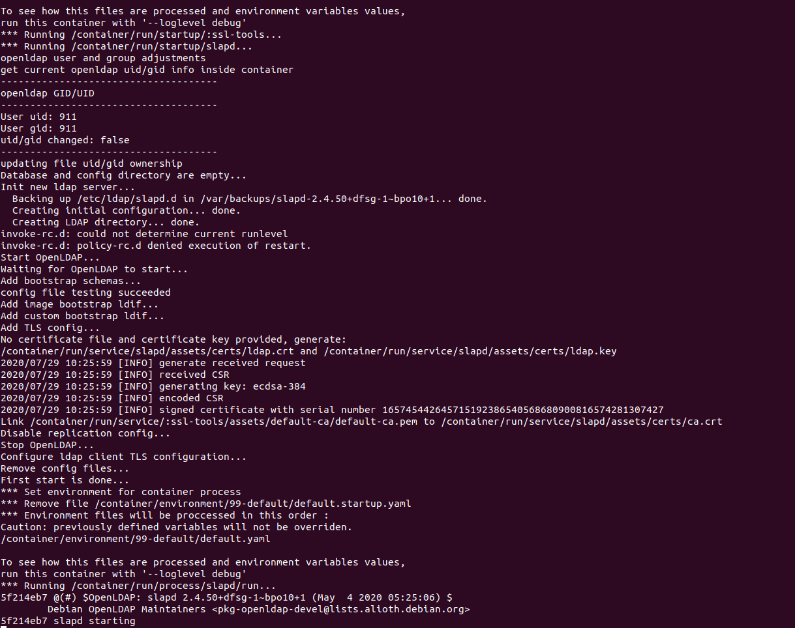
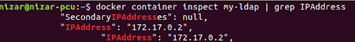
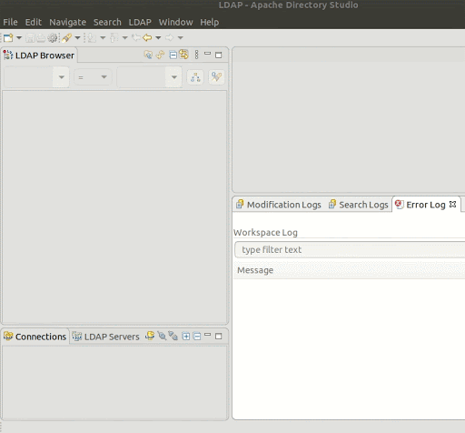
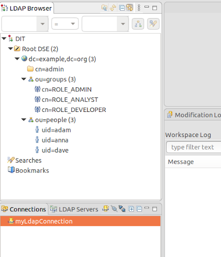
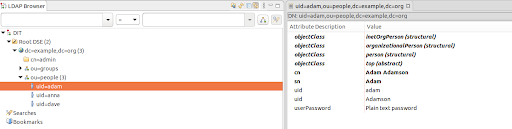
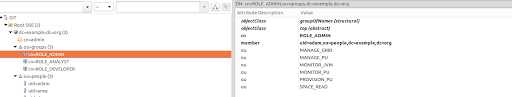

This document shows how to set up
LDAP (Lightweight Directory Access Protocol) is often used by organizations as a central repository for user information and as an authentication service. It can also be used to store role information for application users.
LDIF (LDAP Data Interchange Format) is a standard plain text data interchange format for representing LDAP directory content and update requests. LDIF conveys directory content as a set of records, one record for each object or entry.
LDIF samples are from <prod zip>/config/security/ldap-sample.ldif.
As mentioned above, we have used the LDIFexample provided with
version: 1
#################
# Define Roles #
#################
# create the groups ou (used to define the role groups)
dn: ou=groups,dc=example,dc=org
objectclass: top
objectclass: organizationalUnit
ou: groups
# create a an analyst role and attach with the following settings:
# Privilages: MONITOR_PU, SPACE_READ
# Members : gs-viewer
dn: cn=ROLE_VIEWER,ou=groups,dc=example,dc=org
objectclass: top
objectclass: groupOfNames
cn: ROLE_VIEWER
member: uid=gs-viewer,ou=people,dc=example,dc=org
ou: MONITOR_JVM
ou: MONITOR_PU
ou: SPACE_READ
# create a a developer role and attach with the following settings:
# Privilages: PROVISION_PU, MONITOR_PU, SPACE_READ
# Members : gs-mngr
dn: cn=ROLE_MNGR,ou=groups,dc=example,dc=org
objectclass: top
objectclass: groupOfNames
cn: ROLE_MNGR
member: uid=gs-mngr,ou=people,dc=example,dc=org
ou: MONITOR_JVM
ou: MONITOR_PU
ou: SPACE_READ
ou: PROVISION_PU
As you can see (open the file and read the documented comments for a deeper explanation), we have added an organizational unit (hereinafter ou) called groups. This organizational unit will hold domain names (hereinafter dn) that will define the different roles and their permissions, for example:
dn: cn=ROLE_MNGR,ou=groups,dc=example,dc=org
objectclass: top
objectclass: groupOfNames
cn: ROLE_MNGR
member: uid=gs-mngr,ou=people,dc=example,dc=org
ou: MONITOR_JVM
ou: MONITOR_PU
ou: SPACE_READWe can see here that this dn has a Common Name (hereinafter cn) called ROLE_MNGR, it is under the groups ou and it has three child ous: MONITOR_JVM, MONITOR_PU and SPACE_READ.
These children ou define the privileges granted for this specific role.
In addition, the dn can include members (in our example it is anna) that define which users have this role.
You can add as many roles, members and privileges as you need.
we recommend following the convention where the cn is ROLE_{role description}.
In addition, we have added an ou called people. This ou will be used to encapsulate the users as its children.
# create the people ou so which encapsulates the users.
dn: ou=people,dc=example,dc=org
objectclass: top
objectclass: organizationalUnit
ou: peopleA child user appears as follows:
# add a user with uid = admin, and password = admin
dn: uid=gs-admin,ou=people,dc=example,dc=org
objectclass: top
objectclass: person
objectclass: organizationalPerson
objectclass: inetOrgPerson
cn: Firstname Lastname
sn: Firstname
uid: Lastname
userPassword: gs-admin
Note that each user has a uid with his username, and a userPassword with his password. In this example we used plain text passwords, but in production mode we recommend encrypted passwords.
In this example we are going to demonstrate how to connect to a docker-based LDAP environment. If you already have an LDAP server for your organization customize this example in order to connect GigaSpaces to your server.
In order for the solution to run you should add the following files to the build’s “/lib/optional/spring” folder:
spring-ldap-core-2.3.3.RELEASE.jar
spring-security-ldap-5.1.7.RELEASE.jar
In order to run your LDAP server, use the following command:
Try to avoid using relative paths as it may cause errors.
docker run --name my-ldap
--volume {Path-To-Build}/config/security/ldap-sample.ldif:/container/service/slapd/assets/config/bootstrap/ldif/50-bootstrap.ldif osixia/openldap:1.4.0
--copy-serviceThis command runs a docker container with an LDAP server and exposes it on port 389. In addition, it initiates it with the default domain example.org, and a default administrator user with username:admin and password:admin.
Refer to this documentation for more information regarding the docker image and how to change its default values.
Note that we supplied the ldap-sample.ldif file to the container to be used along with the default settings — this exports the ldap-sample.ldif file into the LDAP and adds our users.
The files used in this example are found in the following locations:
<prod zip>/config/security/ldap-security-config.xml
<prod zip>/config/security/ldap-sample.ldif
After running the command you should see the following output:

Use the following command to extract the container’s local ip address:
docker container inspect my-ldap | grep IPAddressThe output will give you the local ip address. In our case as you can see the ip address is 172.17.0.2.

Before connecting our LDIF server to GigaSpaces, let's try to view it in Apache Directory Studio which is a client that helps viewing and modifying the LDAP server in a convenient way.
This is an optional step, but in order to follow along with it download Apache Directory Studio and follow the installation instructions.
Create a new connection by pressing LDAP (in the top navigation) -> New connection.
Set the connection name to any name you want and the hostname to the IP address we extracted previously.
Set the Bind DN or user to the defaults: cn=admin, dc=example, dc=org
And the password to the default password: admin.
Press Finish to create the new connection.

After the connection is established you can view the different users and groups.
We can see in the LDAP browser that we have two groups: groups that has the roles and users that has the users:

You can click on each element to display and modify it.
In order to use the LDAP server we just configured as
Make sure your security is enabled in the setenv_overrides file — {GS_HOME}/bin/setenv_overrides.sh/bat.
In addition to enabling the security, ensure that the SSL is enabled/disabled as it is a required field.
The setenv_overrides.sh/bat file should look appear as follows:
export GS_OPTIONS_EXT='-Dcom.gs.security.enabled=true -Dcom.gs.manager.rest.ssl.enabled=false'SET GS_OPTIONS_EXT=-Dcom.gs.security.enabled=true -Dcom.gs.manager.rest.ssl.enabled=falseEdit the properties config file, located at /config/security/security.properties, to point to ldap-security-config.xml:
com.gs.security.security-manager.class=com.gigaspaces.security.spring.SpringSecurityManager
spring-security-config-location=../config/security/security-config.xml
Note that the .xml file location is relative to the /bin/ folder.
Open the ldap-security-config.xml file and make sure that its contextSource has the correct IP address of the LDAP server:
<bean id="contextSource"
class="org.springframework.security.ldap.DefaultSpringSecurityContextSource">
<constructor-arg value="ldap://172.17.0.2:389/dc=example,dc=org" />
<property name="userDn" value="cn=admin,dc=example,dc=org" />
<property name="password" value="admin" />
<!--
Most LDAP providers do not allow anonymous binding, therefore we'll
need to provide a manager DN and password to bind with.
<property name="userDn" value="cn=manager,dc=example,dc=com" />
<property name="password" value="password" />
-->
</bean>
Note that since the LDAP server does not allow anonymous queries we should also specify the userDn (the administrator) and his password (default: admin).
We can see that the populator is set to search for the roles in the “groups” ou:
<bean id="populator"
class="org.springframework.security.ldap.userdetails.DefaultLdapAuthoritiesPopulator">
<constructor-arg ref="contextSource" />
<!-- group based DN - we will be searching for groups in "ou=groups,dc=example,dc=com" -->
<constructor-arg value="ou=groups" />
<!-- the name of the attribute that will contain role information (which
effectively translates to a user's granted authorities. Default is "cn" -->
<property name="groupRoleAttribute" value="ou" />
<!-- case normalization to upper case. Default is true -->
<property name="convertToUpperCase" value="false" />
<!-- role prefix to append to the group name. Default is "ROLE_". -->
<property name="rolePrefix" value="" />
</bean>
In addition, we can see that the authenticator has set the username to be the uid, and the members to be part of the “people” ou.
Also, the encoder used for decoding the passwords is NoOpPassowrdEncoder as we saved our passwords in plain text.
<bean id="authenticator"
class="org.springframework.security.ldap.authentication.PasswordComparisonAuthenticator">
<constructor-arg ref="contextSource" />
<!-- how to find a user in LDAP -->
<property name="userDnPatterns">
<list>
<!-- {0} servers as a pattern argument placeholder for a username -->
<value>uid={0},ou=people</value>
</list>
</property>
<property name="passwordEncoder">
<!-- This PasswordEncoder is a legacy implementation and using it is considered insecure.
Instead use BCryptPasswordEncoder, Pbkdf2PasswordEncoder or DelegatingPasswordEncoder -->
<bean class="org.springframework.security.crypto.password.NoOpPasswordEncoder" />
</property>
<bean>
In production it is recommended to use encryption for the passwords, and use its relevant decoder.
Now, If you try to access


As you can see, adam is attached to the “ROLE_ADMIN” group and has all the available authorities.